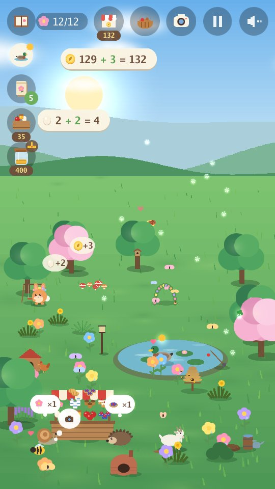
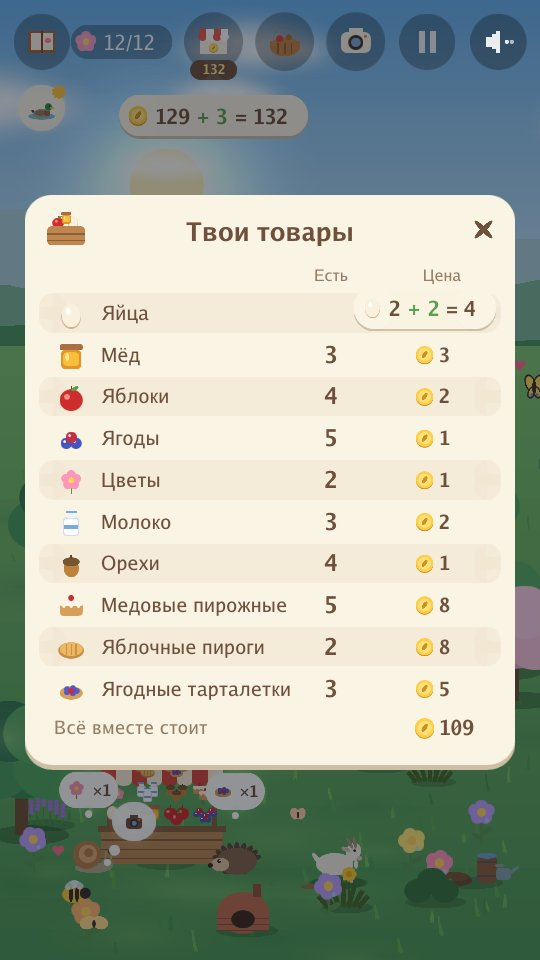
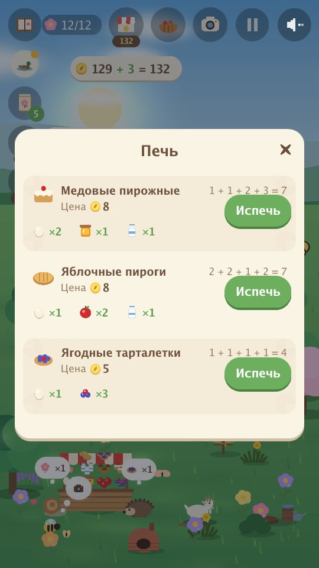
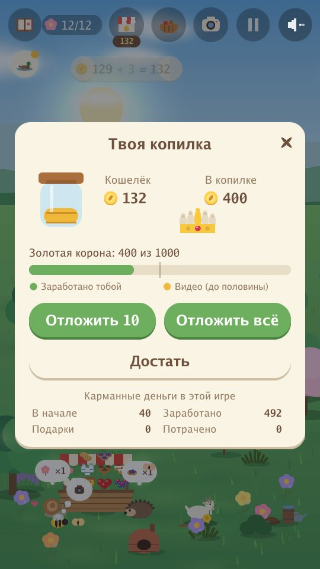

Arnoob Land
Спокойная игра о природе для детей

Тихому саду нужна твоя помощь. Маленький зайчик хочет снова сделать его домом, семечко за семечком. Сажай цветы, построй пруд, раскладывай угощения и смотри, кто придёт в гости. Каждый сезон приносит новых друзей-зверей: пчёл и уток весной, черепах и колибри летом, лис и барсуков осенью, белых сов и выдр зимой.
- Спокойно и мягко: ни таймеров, ни очков, которые можно потерять, ни проигрышей.
- Только звуки природы: ветер, вода, дождь, птицы и голоса зверей. Никакой музыки.
- Четыре сезона и 80 зверей, с которыми можно подружиться, а ещё золотые звери и редкие мгновения.
- Следи за луной: ночь за ночью она меняется от новолуния до полнолуния и обратно, а совы любят ночи полнолуния.
- Фотографируй своих друзей-зверей для альбома: каждое фото приносит монету.
- Учись заботиться о друзьях: замечай, что нужно каждому зверю, и строй ему дом (пруд, поленницу, ягодный куст...), чтобы новые друзья приходили быстрее; исполняй их желания, помогай двум друзьям играть вместе, дари другу цветок и смотри, как растёт дружба.
- Веди маленькую ферму: корми курочек, держи пчёл и козу, собирай яблоки, ягоды и цветы и продавай их за оживлённым прилавком друзьям, которые приходят за покупками. Купленное можно продать обратно за полцены, кроме пруда, растений, семян и деревьев.
- Будь помощником сада: пропалывай сорняки, сгребай листья и счищай снег в компостную кучу — она даёт лишний урожай и ускоряет ферму, — и поливай цветы и фруктовые деревья. Каждое дело повышает твой уровень помощника сада.
- Пеки и выполняй заказы: превращай яйца, молоко, мёд, яблоки и ягоды в пирожные, пироги, тарталетки и джем, которые стоят дороже, и складывай сумму, когда друг приносит маленький заказ.
- Считай, пока играешь: каждое собранное или проданное яйцо и каждая заработанная или потраченная монета показываются простым примером, например 3 + 2 = 5.
- Учись копить: клади монеты в копилку, смотри, как она понемногу растёт каждый день, и копи на золотую корону.
- Собирай золотую корону по кусочкам: сбережения наполняют её золотом, а три самоцвета приносят друзья.
- Спокойная игра в каждом сезоне: рыбалка (рыбки возвращаются в воду), светлячки (они улетают на волю), осенний сбор орехов и яблок и снежная крепость.
- Прятки с друзьями: с пятого друга друзья прячутся по всему саду и играют вместе, а когда ты найдёшь всех, золотые друзья приходят чаще.
- Восемь языков: английский, арабский, китайский (упрощённый), французский, немецкий, японский, русский и испанский. Игра начинается на языке твоего телефона (на английском — для любого другого), а глобус на главном экране меняет язык. Игра написана на английском; остальные семь языков переведены с помощью ИИ.
- Долгое спокойное путешествие: играй целый год много дней подряд или в более короткую игру на один сезон. Сад сохраняется по ходу игры.
- Сад мечты, если захочешь: копи на качели, мостик, фонтан, домик на дереве и многое другое. Друзья ими пользуются, а четыре тайных друга могут прийти на них посмотреть.
В саду




Для родителей
Никаких аккаунтов, чатов и покупок. Видео показываются, только когда ребёнок сам решает посмотреть одно из них, ради небольшого подарка в игре: корзинки товаров для продажи, нескольких монет, сюрприза для сада, семян или угощений.
Политика конфиденциальности app-ads.txt